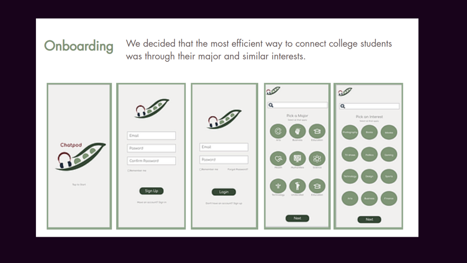

Chatpod

Overview
Prompt
Design a mobile app that enables users to build and maintain a sense of community with one another through digital events
Team and roles
Me - User Research, Ideation & Brainstorming, Sketches & Wireframes, Prototyping
Christina Maury - User Research, Branding, Logo design, Prototyping
Event
createsc 2021 hosted by Innovative Design at USC
Duration
24 hours
Brief
As people looks towards rekindling social interaction , the struggle against public safety will continue to hover above them. How might we imagine future events and new ways to stay connected with others while abiding to social distancing standards?
Solution
Chatpod - An app where students will be connected with other students based on their majors and other interests. Once they've been connected, they can join audio rooms or chatpods to recap on a class or subject and meet a study group. Or they can join group discussions about music, video games, entrepreneurship and other interests.
Research
Young adults are suffering due to isolation and loneliness during the pandemic.
According to this Harvard Gazette article,
- 63% of young people reported experiencing substantial symptoms of anxiety and depression
- 61% of those aged 18-25 reported higher rates of loneliness
- “The pandemic is triggering a loneliness epidemic... Research suggests feelings of social isolation are on the rise and that those hardest hit are older teens and young adults.”
Since young adults are most susceptible to loneliness during this pandemic, we decided that our target users for this app would be college students.
Competitive analysis on popular apps amongst college students.
I found that there was a need for an app amongst college students that promotes meeting new people, building genuine connections, and creating communities through similar interests.
Ideation
How might we ... connect college students to build and maintain genuine connections digitally?
We decided that creating an audio platform would be best because:
- Video chat with strangers may be too personal and has potential to lead to harassment or inappropriate use of the platform (Omegle)
- Users may not use the app if they feel it takes too much of a commitment to use the app
- Direct Messaging is too impersonal and there are many other options for that
We also decided that the most efficient way to connect college students was through their major and similar interests.
While Christina worked on branding and logo design, I brainstormed some features on Miro, keeping in mind the key insights from research.
Features
When brainstorming ideas, I focused on meeting the user's needs. I ideated features that help users meet new students, build genuine connections, and create communities through similar interests.
Branding & Logo Design
Since this app is for college students we decided to go for an inviting, calm, and simple. We wanted the main focus of the app to be meeting other students and connecting on similar interests.
Wireframe & Prototyping
Since we were on a time limit, after brainstorming and agreeing to the features, I immediately started created wireframes on Adobe XD. I decided to create 5 menu options: Search, Groups, Pods, Messages, and Profile.
These features catered to the needs of college students by creating a familiar, easy to use, and effective design
Project Walkthrough
